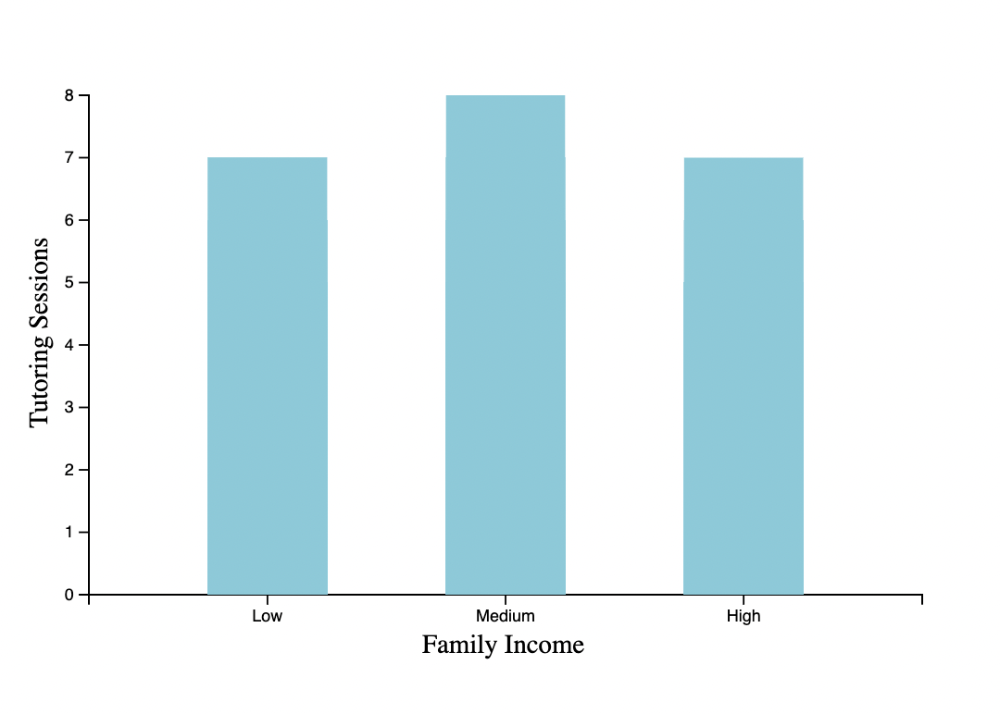
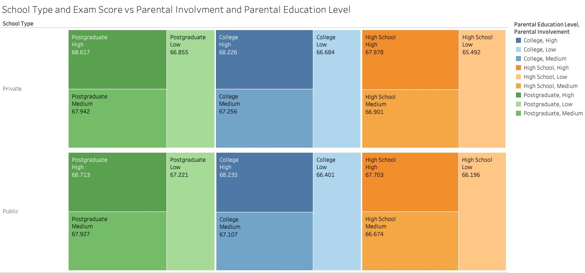

Exploring the key factors that influence student success and exam scores
Student performance is influenced by a combination of academic habits, socio-economic background, parental involvement, and external environmental factors. By analyzing these diverse factors, we aim to determine which variables — such as study hours, attendance, motivation levels, and access to resources — have the greatest impact on academic success and how they interact with each other to influence student outcomes.
Our research question focuses on identifying the key factors influencing student academic performance and understanding how they impact exam scores. This analysis can provide valuable insights for educators, policymakers, and parents to design better support systems that improve student outcomes.
Our analysis utilizes the Student Performance Factors Dataset from Kaggle, which contains 6,607 observations and 20 features. The dataset includes a mix of categorical variables (such as school type and gender) and continuous variables (such as study hours and exam scores). It provides comprehensive information on various personal, academic, and socio-economic factors that may influence student success. However, additional data on learning environments, teacher interaction, and psychological well-being can be better understood with extra analysis.
| Attribute | Type | Description | Encoding (if categorical) |
|---|---|---|---|
| Hours Studied | Numerical | Number of hours spent studying per week | - |
| Attendance | Numerical | Percentage of classes attended | - |
| Parental Involvement | Categorical | Level of parental involvement in the student's education | Low, Medium, High |
| Access to Resources | Categorical | Availability of educational resources | Low, Medium, High |
| Extracurricular Activities | Categorical | Participation in extracurricular activities | Yes, No |
| Sleep Hours | Numerical | Average hours of sleep per night | - |
| Previous Scores | Numerical | Scores from previous exams | - |
| Motivation Level | Categorical | Student's level of motivation | Low, Medium, High |
| Internet Access | Categorical | Availability of internet access | Yes, No |
| Tutoring Sessions | Numerical | Number of tutoring sessions attended per month | - |
| Family Income | Categorical | Family income level | Low, Medium, High |
| Teacher Quality | Categorical | Quality of the teachers | Low, Medium, High |
| School Type | Categorical | Type of school attended | Public, Private |
| Peer Influence | Categorical | Influence of peers on academic performance | Positive, Negative, Neutral |
| Physical Activity | Numerical | Average number of hours of physical activity per week | - |
| Learning Disabilities | Categorical | Presence of learning disabilities | Yes, No |
| Parental Education Level | Categorical | Highest education level of parents | High School, College, Postgraduate |
| Distance from Home | Categorical | Distance from home to school | Near, Moderate, Far |
| Gender | Categorical | Gender of the student | Male, Female |
| Exam Score | Numerical | Final exam score | - |
You can find our dataset here!
1. Shields, Liam, Anne Newman, and Debra Satz, "Equality of Educational Opportunity", The Stanford Encyclopedia of Philosophy (Winter 2023 Edition), Edward N. Zalta & Uri Nodelman (eds.)
Read More2. Tinto, Vincent. "Dropout From Higher Education: A Theoretical Synthesis of Recent Research." Review of Educational Research, vol. 45, no. 1, Jan. 1975, p. 89.
Read MoreThe analysis plan for our dataset consists of the following tasks:
Our visualization approach follows a structured analytical path. We begin with broad exploratory visualizations (visualizations 1-3) to understand general relationships and patterns within the data. Based on these findings, we then focus on specific interactions and relationships between key variables in our targeted visualizations (4-6).
Summary and Takeaway: This correlation heatmap of numerical features visually represents how strongly each pair of numerical variables is related, using color intensity to indicate correlation values. The scale ranges from -1 (perfect negative correlation) to +1 (perfect positive correlation).
The heatmap reveals that Attendance is the strongest predictor of exam scores, followed by Hours Studied and Previous Scores, which also shows a positive but slightly weaker correlation. Tutoring Sessions, Sleep Hours, and Physical Activity show little to no correlation. This suggests that consistent academic habits and personal study time are key drivers of performance, whereas well-being and support factors may play a less direct role in short-term exam outcomes.
Summary and Takeaway: These scatter plots show relationships between various numeric features and exam scores. Each point represents a student, with the x-axis indicating the specific feature and the y-axis showing their exam score.
Hours studied has the strongest visible relationship with exam scores - as students study more, their scores generally increase, with the highest performers often studying over 25 hours. Attendance shows only a slight upward trend, with most students scoring between 60 and 80 regardless of attendance, indicating that attendance alone doesn't strongly influence outcomes. Sleep hours appear to have no meaningful impact on exam scores, suggesting that while sleep may affect general well-being, it doesn't directly reflect in exam performance. Previous scores show only a mild correlation, implying that while previous performance offers some context, it's not a guaranteed indicator of current outcomes.
Summary and Takeaway: These boxplots compare exam scores across different categorical factors. Each box represents the distribution of scores for one category, with the box showing the interquartile range (IQR), the line inside the box showing the median, and the dots representing outliers.
The boxplots reveal subtle but consistent trends: Students with high motivation, high parental involvement, better access to resources, and higher teacher quality consistently perform better. Socioeconomic factors like family income and parental education level also show positive associations with performance. Extracurricular involvement is linked to slightly higher scores, while learning disabilities are associated with lower average scores. Interestingly, gender and distance from home show minimal differences, suggesting that performance is shaped more by academic, social, and support-based factors than demographic or logistical ones.
Summary and Takeaway: Based on our findings from the earlier visualizations showing hours studied as a key factor but sleep as seemingly unimportant, this interactive visualization allows deeper exploration of these relationships. Users can select ranges of hours studied and exam scores on the left graph, which updates the boxplots on the right to show corresponding sleep patterns.
This interactive approach confirms our earlier observation that sleep hours have minimal impact on exam scores. Regardless of the selected study time or performance range, the median sleep hours remain remarkably consistent across different performance groups, challenging the common assumption that sleep significantly impacts academic performance in this dataset.

Summary and Takeaway: After examining the role of socioeconomic factors in our earlier visualizations, this bar chart explores how family income relates to academic support through tutoring sessions. Interestingly, low-income and high-income families access similar numbers of tutoring sessions, while middle-income families utilize more. This suggests that tutoring access isn't simply tied to economic resources but may involve other factors such as time availability, educational priorities, or targeted support programs.

Summary and Takeaway: Building on our earlier findings about the importance of parental factors, this visualization examines the intersection of parental education level, parental involvement, and school type. Color represents parental education level and involvement while size shows average exam scores.
The visualization reveals a consistent pattern: regardless of school type or parental education level, students with low parental involvement consistently achieve lower exam scores compared to peers with medium or high involvement. Additionally, higher parental education levels correlate with better student performance, reinforcing the significant impact of home environment and parental engagement on academic outcomes across different educational settings.
We initially hypothesized that factors difficult to change, such as family income, would significantly impact exam scores. However, our visualizations revealed a different story. Most factors showed minimal effect on exam performance, with hours studied and attendance emerging as the strongest predictors.
Additionally, we discovered that across different school types and parental education levels, children with more involved parents consistently outperform their peers. The data suggests that the most effective ways to improve exam scores are straightforward: attend class regularly and dedicate adequate time to studying.